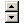

|  | TAUpdown |
Creates an updown control on the form.
| Properties: | |
| ContextMenu | Allow to attach a ContextMenu to the control. ContextMenu must be created first. |
| Cursor | This property define what cursor will be showed when mouse over the control. |
| Enabled | This is True by default. Set it to False to generate disabled control. This will add GUICtrlSetState(-1, $GUI_DISABLE) line. |
| Left,Top | Position of control relative to it's parent. |
| Width,Height | Size of control in pixels. |
| Hint | This property containing text that will appear when mouse cursor is over control. This will add GUICtrlSetTip(-1, "Your hint text") line. |
| Items | This property contains control items list. This will open Graphic editor. |
| Max | Maximal value of control can change to. |
| Min | Minimal value from what control will change. |
| Name | Unique name of control, this defines the name of variable where control ID will be kept. It also can be empty, when no variable will be created. |
| OnChange | Standard control event. |
| Position | Current position of control. |
| Resizing | This property define contol resizing. |
None.